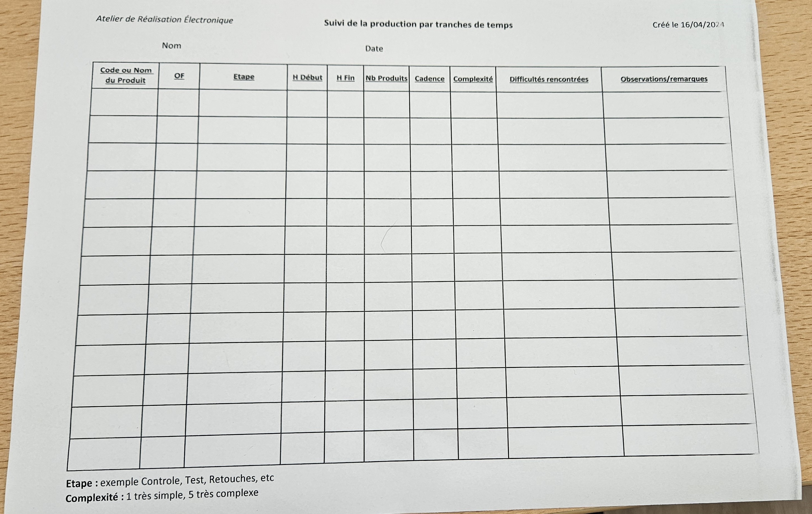

Le but était de permettre la saisie des heures de travail des employés ainsi que de faciliter la gestion et la génération de rapports sur les heures travaillées dans le cadre d'un ordre de fabrication (OF). Anciennement, tout était saisi manuscritement, ce qui engendrait une perte de temps dans la production. Une saisie numérique peut permettre un gain de temps et d'avoir une meilleure visualisation des saisies des employés.
Il a tout d'abord fallu se concerter mutuellement avec Redouane afin de se mettre d'accord sur la tournure de l'application.
Un autre cahier des charges a donc été réalisé (annexe 3).
Nous avons pris le temps de bien dialoguer pour débuter le projet dans de bonnes conditions.
Voici un croquis de la structure que l'application va adopter :
Chaque utilisateur de l'application (employés de production et administrateurs) doit se pouvoir se connecter avec un identifiant et un mot de passe. Plusieurs utilisateurs peuvent se connecter simultanément et l'identification permet de connaître le rôle de chacun.
Définition : "Un Ordre de fabrication (OF) autorise le lancement de la production d’une quantité d’un produit pour un délai donnée.
L’OF autorise son ordonnancement et son exécution. Il peut être le lien entre une commande (ou demande d’approvisionnement) et la production de cette dernière." [Astrée]
Pour pouvoir numériser le suivi d'ordre de fabrication, il faut connaître les différents champs qui le constituent.

Nous avons comme champs, le code ou le nom du produit, le numéro de l'OF, l'étape de production, l'heure de début, l'heure de fin, le nombre de produits réalisés, la cadence de la production, la complexité de la tâche, les difficultés rencontrées et les observations / remarques.
Chaque OF possède un QR code qui permet de l'identifier.
L'application permettra de scanner ce QR code pour pouvoir commencer la saisie des champs.
J'ai réfléchi à une automatisation de certains de ces champs (numéro de l'OF, heure de début, heure de fin, durée et cadence), pour simplifier la tâche.
Quand l'application scanne le QR code, l'heure de début est enregistrée ainsi que le numéro de l'OF.
S'ouvre ensuite une nouvelle page où l'employé doit sélectionner l'étape sur laquelle il va travailler.
L'application reste "en pause" le temps de ce travail.
Une fois la tâche terminée, l'utilisateur doit stopper l'OF sur l'application en cliquant sur le bouton stop.
Il est ensuite redirigé vers un formulaire pour saisir les différentes informations demandées :